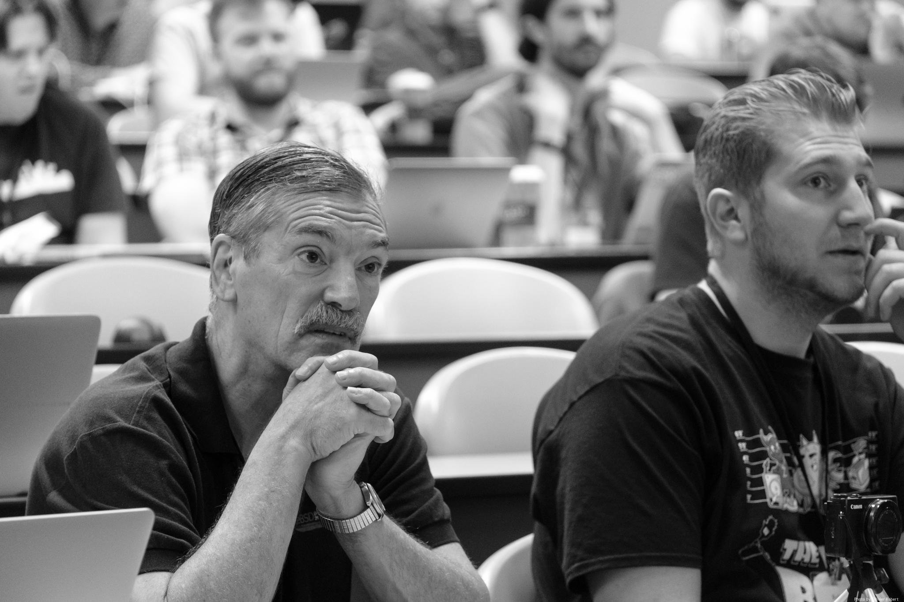
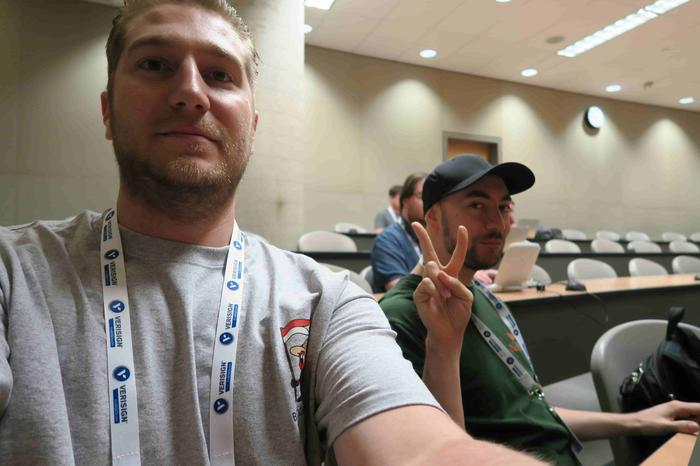
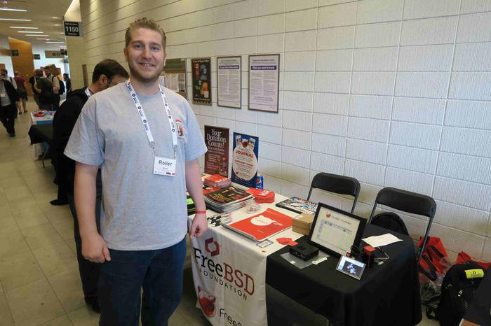
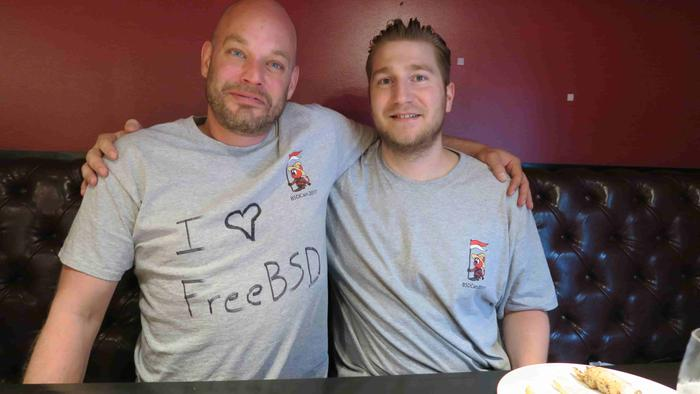
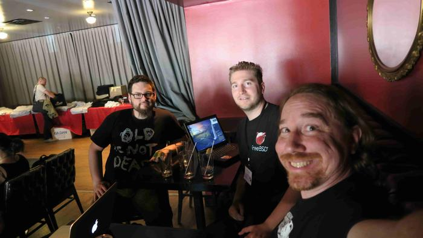
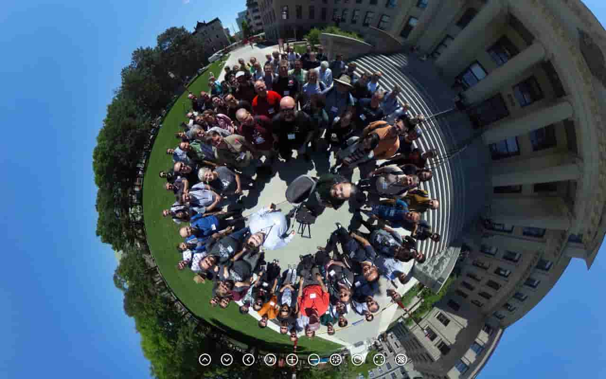
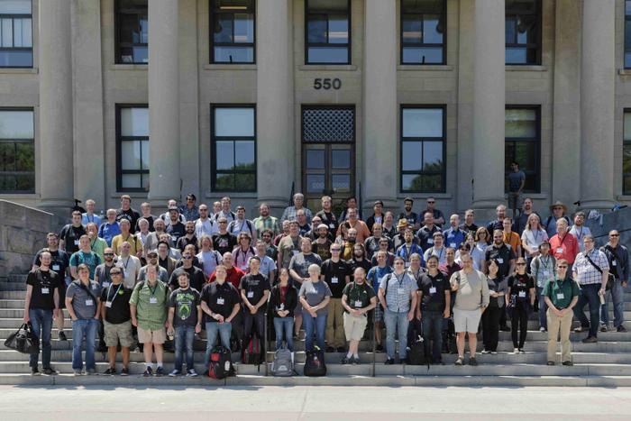

SCaLE 18x
The instructions for the SCaLE 18x Getting Started with FreeBSD Workshop are available at the following URL
FreeBSD Training | PyBUG
What is PyBUG? Check out my lightning talk I gave on PyBUG at PyCascades 2019! PyBUG Lightning Talk. PyBUG, the Python BSD Users Group: an online users group of both Python and BSD users working together to share ideas and play around with these amazing industrial tools, has begun. We have a wiki with the first training workshop on there. It's been adapted by the community from the SCaLE 17x and 18x workshops I taught. I hope you enjoy, feel free to contribute to the wiki by adding any improvements, here's the link: BSD Programming Workshop wiki. We also just added a training for getting Python installed on FreeBSD and ready to follow along with online tutorials.
In Person Training
I'm always on the lookout for places I can teach. I've was given the opportunity to teach a full day workshop on FreeBSD in SoCal at the conference SCaLE 17x and 18x. All the new material from 18x is available here as Markdown: SCALE 18x updated workshop Learn more here: FreeBSD Workshop March 2019 Download the PDF of the commands used in the 2019 workshop here: Commands. Download the PDF of the slides used in the 2019 workshop here: Slides.
FreeBSD Day
National FreeBSD Day is June 19th.
What's in store for BSD.pw?
BSD.pw is slowly but surely being transformed into an online training platform. You'll see more tutorial links posted in the near future, but the end goal is a more feature rich place to learn about BSD technologies.
BSD Articles
My Getting Started with FreeBSD article was published in the Jan/Feb 2019 issue of the FreeBSD Journal. You can read it by visiting the following Getting Started with FreeBSD Article
Be sure to check out my trip report from my first BSDCan that was published in the FreeBSD Journal. You can either read it in the journal or read it on the FreeBSD Foundation Blog.
Also, I was a speaker at EuroBSDCon 2018. If you'd like to read my trip report that was published in the FreeBSD Journal you can now read the FreeBSD Journal for free online! Look for the Conference Report in the last FreeBSD Journal issue of 2018
BSDCan 2017 Photos








Objectives
The primary goal of BSD.pw is to create a lab environment for testing various BSD technology. The insights gained will be shared on this website in written and video form as a way to document my experiences with BSD, Python, Certification and CSS. From there I'd like to pursue the BSD Professional Certification from the BSD Certification Group
First steps
The preliminary plan is as follows:
- GOAL: Create this website, update from landing page to full on web app with Training material.
- GOAL: Make 20 commits in Bugzilla to FreeBSD Docs.
- Setup a FreeBSD jail host on Digital Ocean with jails running various services inside jails like this website. Many services will be written in Python and will use HTTPS through Let's Encrypt
- Make some serious progress on my EdgeBSD development efforts through working with SaltStack and Flask
Longer term
- ... there will always be more ideas that I'd like to do so getting this project started is motivating me to get up some momentum and challenge myself to keep up the pace. Also, for 2019 I've been doing #100DaysOfCode to make sure I do a little everyday. I'm posting updates on Twitter @possnfiffer
I'm a proud donor to the FreeBSD Foundation.